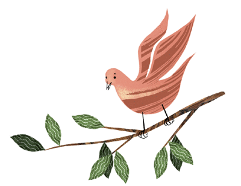

Un jeune garçon nommé Ségué Karanmbé était un oiseleur heureux. Chaque fois qu'il allait visiter ses pièges, il y trouvait de nombreux oiseaux capturés. Il avait attrapé toutes les espèces qui existent au monde, à l'exception d'une tourterelle à gorge noire que les Peuhls appellent kourkoundourôrou et les Bambara bourountouba-kanfi.

Cette tourterelle-là avait esquivé tous ses pièges. Renonçant à la capturer par ce moyen, le garçon prépara de la glu avec de l'écorce bouillie de ficus Puis il englua tous les arbres du pays. La tourterelle, qui ne connaissait pas ce piège, alla se poser sur une branche, et ses pattes furent prisonnières de la matière poisseuse. Ségué Karanmbé accourut pour s'emparer de sa victime.